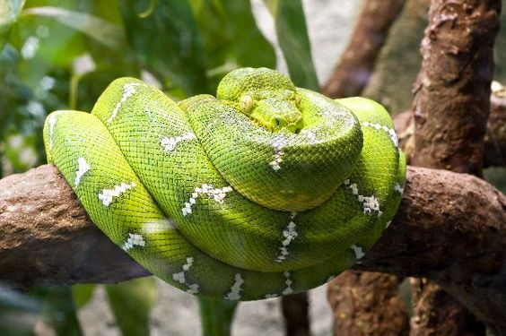
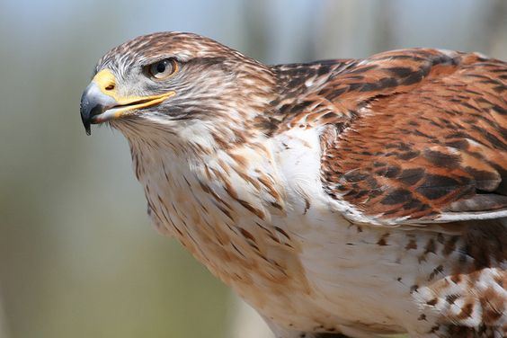
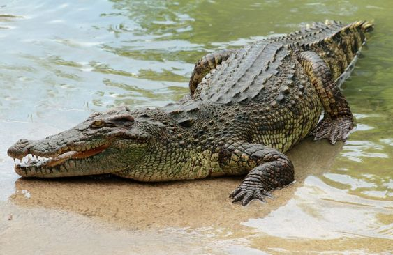
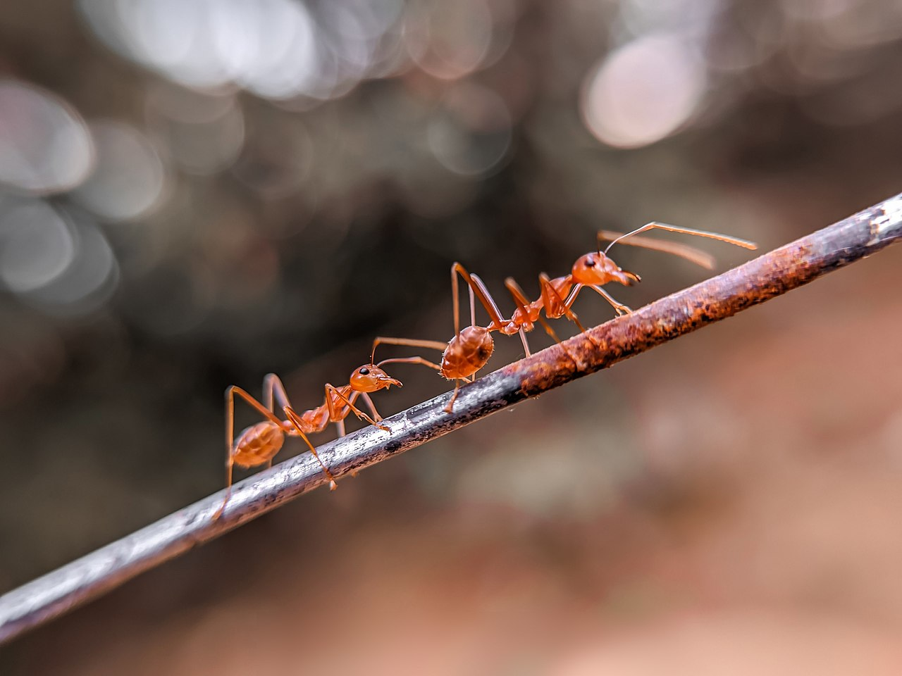

Emerald Boa
Rainforest
The emerald tree boa is a nonvenomous snake of the Boidae family of primitive constrictors. These verdant reptiles are native to the rain forests of northern South America. They spend much of their time in the tree canopies, often draped over branches in their signature looping coil.
- Scientific name: Corallus caninus
- Lifespan: 15 years
- Diet: Rodents, small mammals
Hawk
Mountainous Plains
Hawks are birds of prey. Their pursuit of prey is raking, or swiftly following the animal’s efforts to escape. Their feet are equipped with sharp, curved talons for capturing prey, and their strong beaks are hooked for biting and tearing flesh. Hawks can attain speeds of over 150 mph when diving.
- Scientific name: Buteo
- Lifespan: 12 years
- Diet: Rodents
Crocodile
Fresh water
Crocodiles are large, ponderous, amphibious animals of lizard-like appearance and carnivorous habit. They are semiaquatic reptiles that live throughout the tropics. Crocodiles have powerful jaws with many conical teeth and short legs with clawed webbed toes. The tail is long and massive, and the skin is thick and plated.
- Scientific name: Crocodylus acutus
- Lifespan: 70 years
- Diet: Fish, crustaceans, deer, buffalo
Dog
House
Dogs are domestic mammals of the family Canidae. It is a subspecies/descendants of the gray wolf. The dog is one of the two most ubiquitous and most popular domestic animals in the world (the cat is the other). For more than 12,000 years it has lived with humans as a hunting companion, protector, object of scorn or adoration, and friend.
- Scientific name: Canis lupus familiaris
- Lifespan: 12 years
- Diet: Salmon, beef, dog food
Gorilla
Tropical Forest

Gorillas are predominantly ground-dwelling great apes that inhabit the tropical forests of equatorial Africa. The gorilla is robust and powerful, with an extremely thick, strong chest and a protruding abdomen. Gorillas are the largest living primates, reaching heights between 1.25 and 1.8 metres. They tend to live in troops, with the leader being called a silverback.
- Scientific name: Gorilla beringei
- Lifespan: 40 years
- Diet: snails, leaves, stems
Ant
Nests
Ants are one of the world's most successful and diverse animal families. They are known for their highly organized colonies and nests. Individuals are divided into sub-fertile, and more commonly sterile, females ("workers"), fertile males ("drones"), and fertile females ("queens"). Ant colonies are described as superorganisms because the colony operate as a unified entity.
- Scientific name: Formicidae
- Lifespan: Weeks to 30 years
- Diet: leaves, honeydew, nectar